En esta página se explicará Git y Git Flow, además de una explicación detallada del proceso realizado en este proyecto.
¿Qué es Git y Git Flow?
Git es un sistema de control de versiones que registra los cambios realizados en un archivo o conjunto de archivos a lo largo del tiempo, de modo que se puedan recuperar versiones específicas más adelante.
Git Flow es una metodología de Git que proporciona una estructura definida para cómo se deben organizar y utilizar las ramificaciones en un repositorio Git. La metodología Git Flow se centra en la idea de tener diferentes tipos de ramas para diferentes tipos de trabajo en un proyecto.
Se ha utilizado en el proyecto porque proporciona una estructura clara y definida para la gestión de ramas que facilita la colaboración y el seguimiento del progreso. La separación de estas ramas ayuda a mantener el enfoque y facilita la identificación y solución de problemas. Esta metodología mantiene una rama main exclusivamente para versiones estables y listas para producción, lo que garantiza que el código en producción sea fiable. Además, es lo suficientemente flexible como para adaptarse a las necesidades específicas de cada equipo o proyecto.
Creación del repositorio y de la estructura inicial por parte de Usuario 1.
1. Para comenzar el proyecto, Usuario 1 se encarga de crear el repositorio que se va a utilizar en GitHub. Ese repositorio es después clonado en local para poder trabajar sobre él.
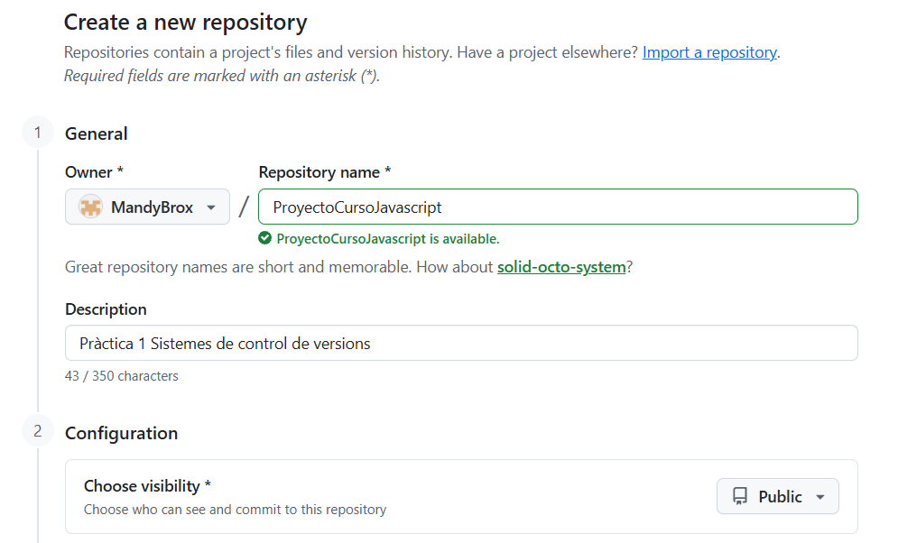
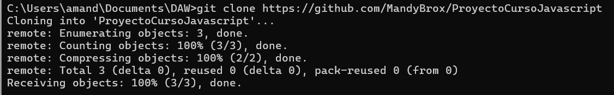
2. El primer paso es crear la rama develop desde main, ya que es lo que indica la metodología Git Flow. Se publica la rama develop en el repositorio remoto para que esté disponible allí.
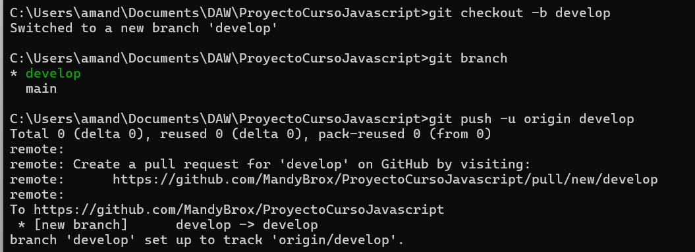
3. Para implementar la estructura inicial del proyecto, utiliza un boilerplate con el modelo que será la base del proyecto.
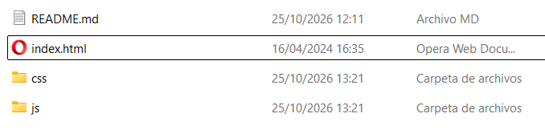
4. En el modelo, el primer paso será implementar la cabecera con la barra de navegación.
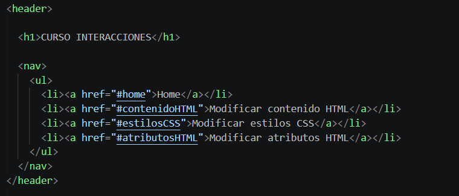
5. Después implementa la parte central con las secciones que los demás desarrolladores trabajarán y añade una pequeña descripción del curso.
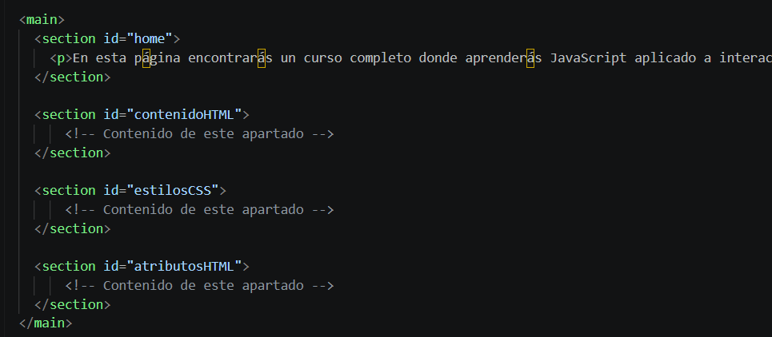
6. Lo último a implementar es el pie de página.
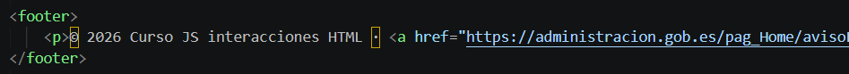
7. Por último, añade los cambios al área de preparación (git add), hace commit sobre ellos (git commit) y los publica en el repositorio remoto (git push) para actualizar el proyecto.
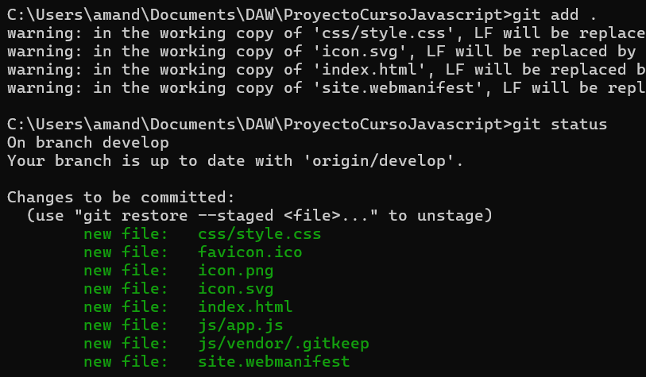
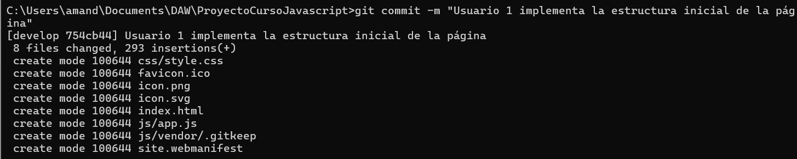
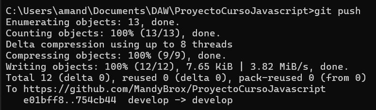
Integración de la funcionalidad "Modificar Contenido HTML" por parte de Usuario 2.
1. Para comenzar su parte del proyecto, el Usuario 2 crea una rama de funcionalidad para poder trabajar desde ella.
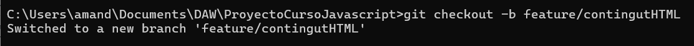
2. Primero crea el bloque de código con el ejemplo para esta sección.
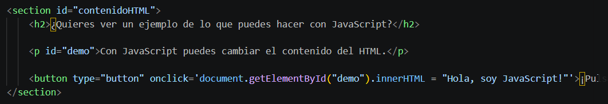
3. Añade la explicación del código del ejemplo para explicar qué hace.
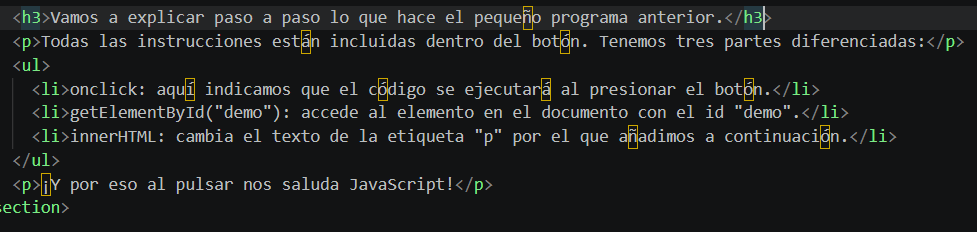
4. Por último, añade los cambios al área de preparación (git add), hace commit sobre ellos (git commit) y los publica en el repositorio remoto (git push) para actualizar el proyecto.
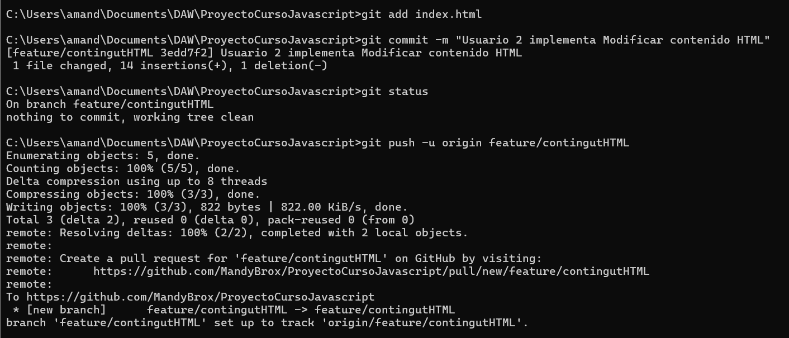
Integración de la funcionalidad "Modificar Atributos HTML" por parte de Usuario 2.
1. Para implementar la siguiente funcionalidad que tiene asignada, el Usuario 2 vuelve a la rama develop y crea la nueva rama de funcionalidad para trabajar sobre "modificar atributos HTML".
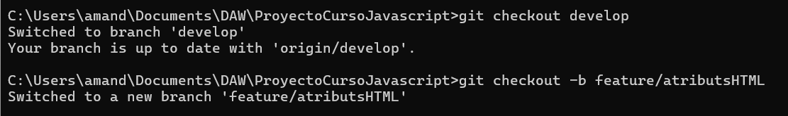
2. Implementa la sección con un pequeño ejemplo, como en la sección anterior, y añade una explicación de lo que hace el código.
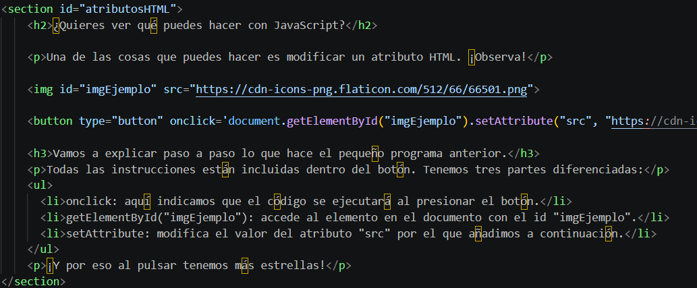
3. Añade los cambios al área de preparación (git add), hace commit sobre ellos (git commit) y los publica en el repositorio remoto (git push) para actualizar el proyecto.
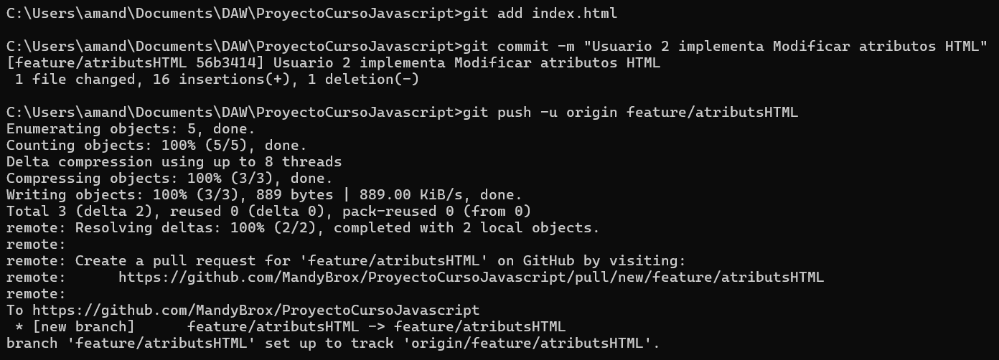
4. Por último, el Usuario 2, una vez terminado su trabajo, añade sus funcionalidades desarrolladas a la rama develop para actualizar el proyecto en la rama de trabajo. Lo publica todo en el repositorio remoto.
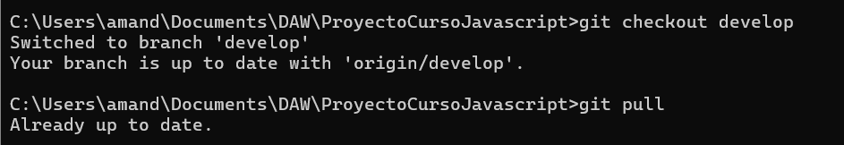
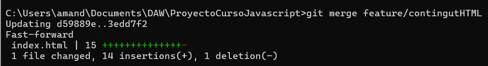
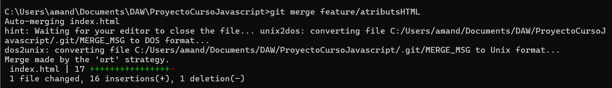
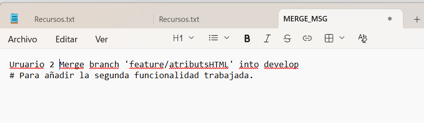
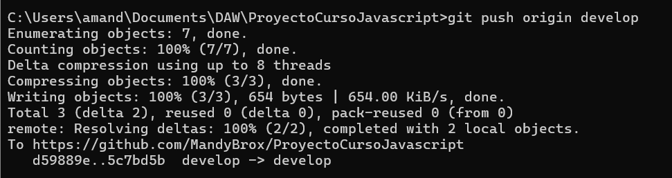
Integración de la funcionalidad "Modificar Estilos CSS" por parte de Usuario 3.
1. El Usuario 3 comienza a trabajar en su asignación. Lo primero que hace es comprobar que está en la rama adecuada, hacer un pull para ver si hay cambios nuevos y crea su rama de funcionalidad sobre la que trabajar.
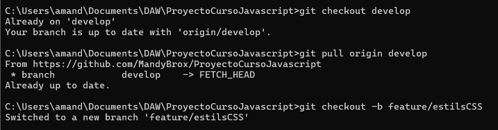
2. Implementa su sección con un pequeño ejemplo y una explicación del código, siguiendo la estructura de las otras secciones.
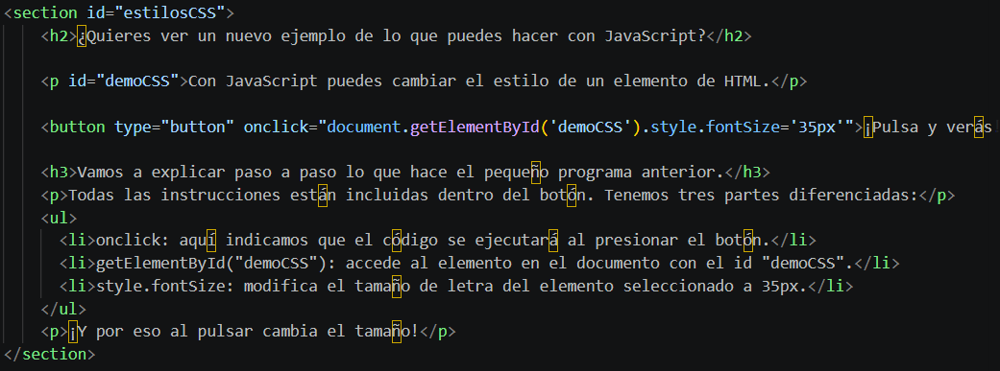
3. Añade los cambios al área de preparación (git add), hace commit sobre ellos (git commit) y los publica en el repositorio remoto (git push) para actualizar el proyecto.
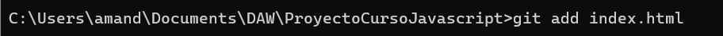
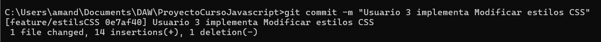
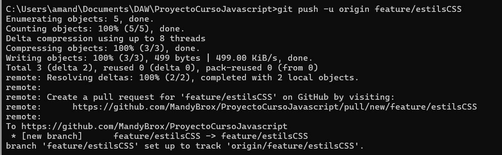
4. Después cambia a la rama develop para integrar los cambios realizados mediante el comando git merge.
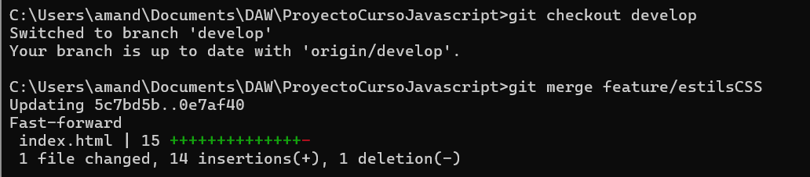
5. Por último, publica los cambios en el repositorio repoto para actualizar el proyecto e integrar los últimos cambios que ha realizado.
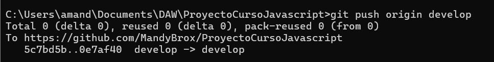
Creación de una release para añadir una etiqueta al proyecto por parte de Usuario 3.
1. Es trabajo del Usuario 3 crear una nueva release con todas las features para añadir una etiqueta. Para ello, crea una nueva rama release.
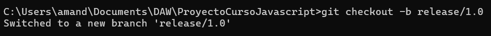
2. Después cambia a main, integra la release con un merge y añade la etiqueta v1.0 a esta primera versión del proyecto.
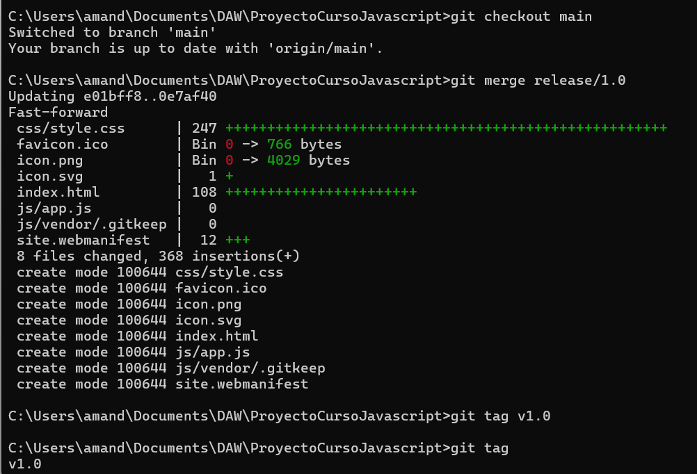
3. Luego sube los cambios al repositorio remoto y hace lo mismo con la etiqueta.
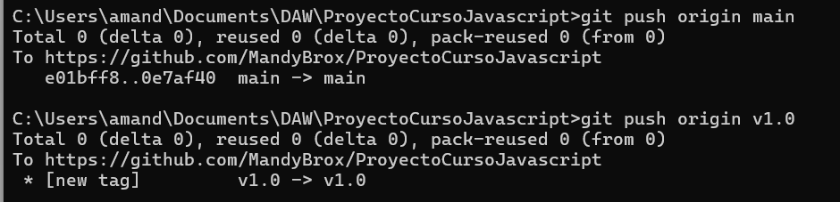
4. Por último, repite el merge con develop para comprobar que está actualizada con la etiqueta.
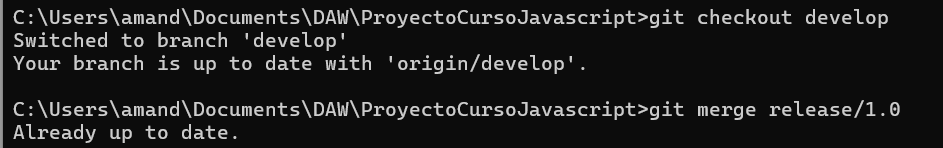
Mejoras en la funcionalidad "Modificar Contenido HTML" por parte de Usuario 1.
1. Será el Usuario 1 el que decidirá mejorar una de las secciones. Para ello, crea una rama hotfix desde main para implementar las mejoras.
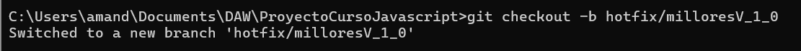
2. Realiza el cambio añadiendo un nuevo botón al ejemplo.
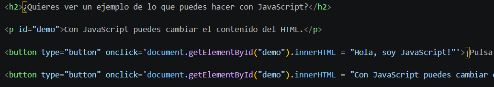
3. Prepara los cambios efectuados y hace un commit de los mismos.
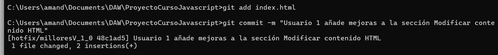
4. Luego integra los cambios realizados en la rama hotfix a la rama main y los publica en el repositorio remoto.
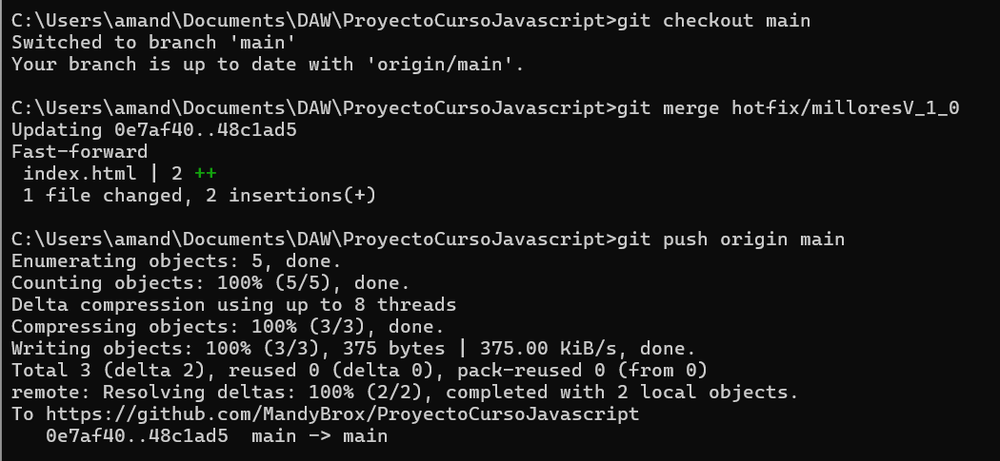
5. Por último, repite el proceso desde la rama develop para integrar los cambios y publicarlos en el repositorio remoto.
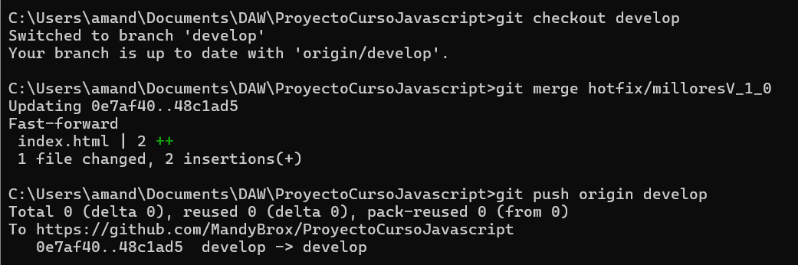